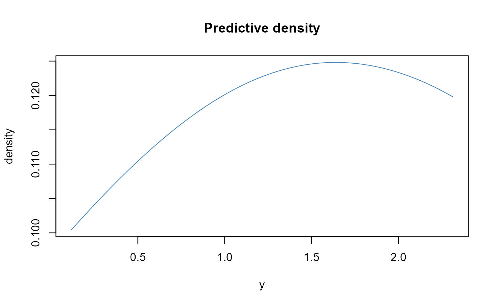
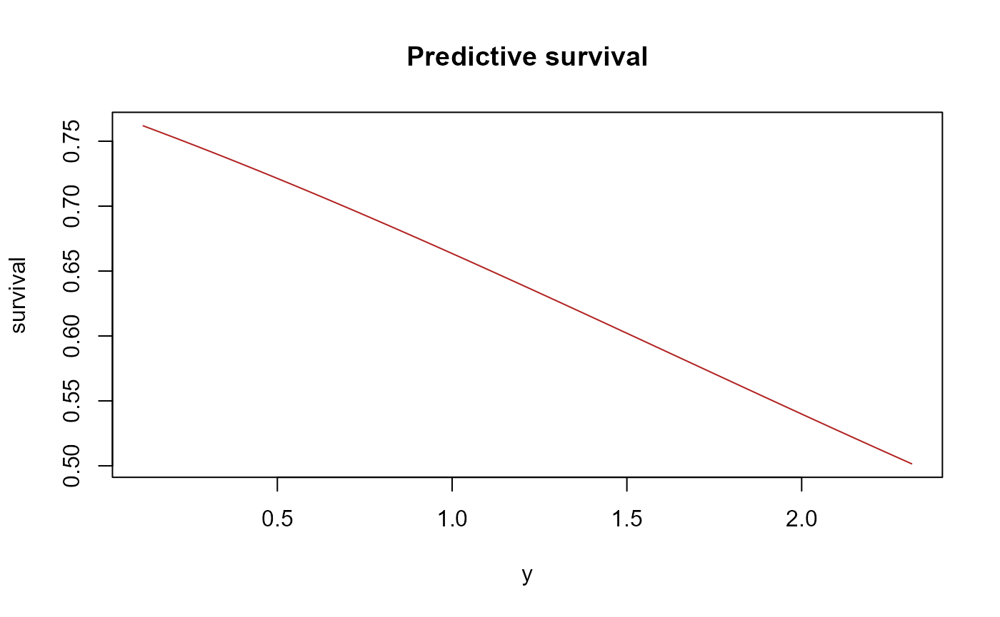
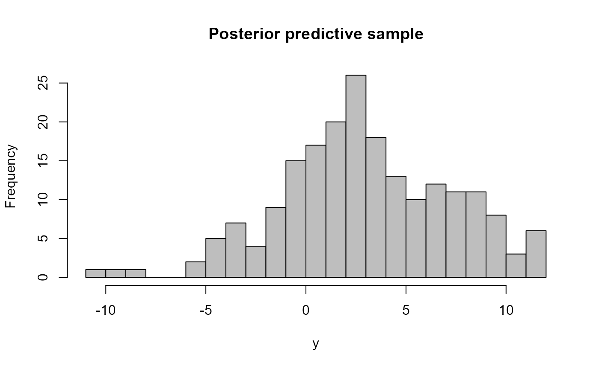

Overview
This vignette covers:
- density and survival prediction
- quantiles
- posterior predictive sampling
- tail behavior with and without GPD
Fit a model
library(DPmixGPD)
library(nimble)
use_cached_fit <- TRUE
.fit_path <- function(name) {
path <- system.file("extdata", name, package = "DPmixGPD")
if (path == "") path <- file.path("inst", "extdata", name)
path
}
fit_small <- readRDS(.fit_path("fit_small.rds"))
set.seed(1)
N <- 50
y <- abs(rnorm(N)) + 0.1
bundle <- build_nimble_bundle(
y = y,
backend = "sb",
kernel = "normal",
GPD = TRUE,
J = 8,
mcmc = list(niter = 200, nburnin = 50, thin = 1, nchains = 1, seed = 1)
)
if (use_cached_fit) {
fit <- fit_small
} else {
fit <- run_mcmc_bundle_manual(bundle, show_progress = FALSE)
}Density and survival
y_grid <- seq(min(y), max(y), length.out = 60)
pr_den <- predict(fit, type = "density", y = y_grid)
pr_surv <- predict(fit, type = "survival", y = y_grid)
plot(y_grid, pr_den$fit[1, ], type = "l", col = "steelblue",
xlab = "y", ylab = "density", main = "Predictive density")
plot(y_grid, pr_surv$fit[1, ], type = "l", col = "firebrick",
xlab = "y", ylab = "survival", main = "Predictive survival")
Posterior predictive sampling
pr_samp <- predict(fit, type = "sample", nsim = 200)
hist(pr_samp$fit[1, ], breaks = 20, col = "gray",
main = "Posterior predictive sample", xlab = "y")
Tail behavior (GPD on/off)
if (use_cached_fit) {
fit_off <- fit_small
} else {
fit_off <- run_mcmc_bundle_manual(build_nimble_bundle(
y = y,
backend = "sb",
kernel = "normal",
GPD = FALSE,
J = 8,
mcmc = list(niter = 200, nburnin = 50, thin = 1, nchains = 1, seed = 2)
), show_progress = FALSE)
}
q_off <- predict(fit_off, type = "quantile", p = 0.99)$fit[1, 1]
q_on <- predict(fit, type = "quantile", p = 0.99)$fit[1, 1]
data.frame(model = c("GPD=FALSE", "GPD=TRUE"), q99 = c(q_off, q_on))
#> model q99
#> 1 GPD=FALSE 10.1547
#> 2 GPD=TRUE 10.1547If the tail is heavy, GPD = TRUE typically yields larger
high quantiles.